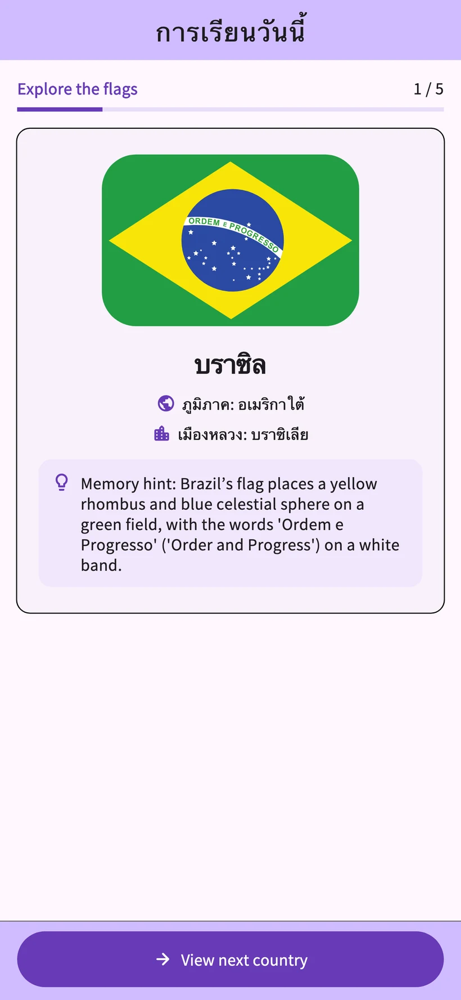
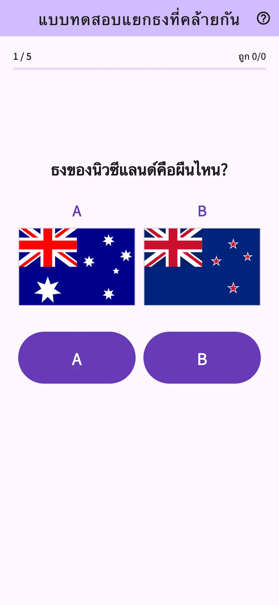
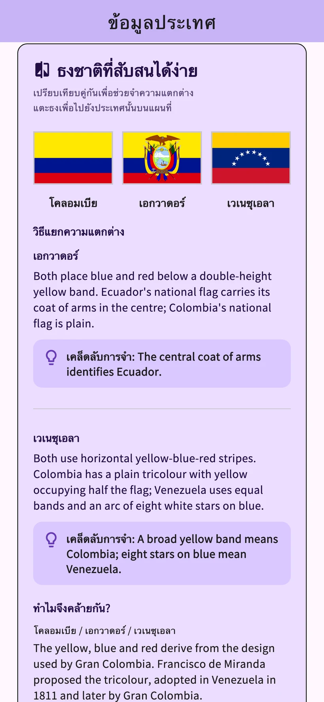
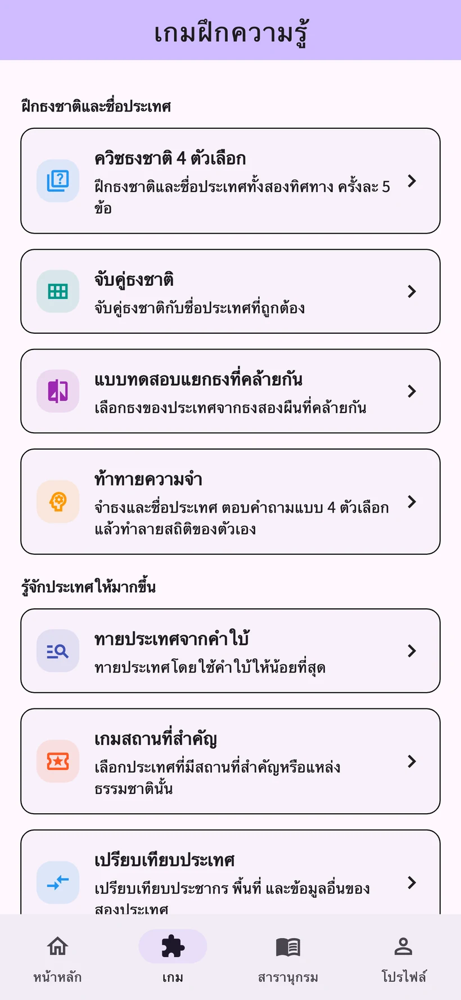

01
ควิซธงชาติ 4 ตัวเลือก
เลือกชื่อประเทศจากธงชาติ หรือเลือกธงชาติจากชื่อประเทศ
ธงชาติ Awa Pop
เรียนรู้ธงชาติและเมืองหลวงของ 206 ประเทศและดินแดน
ทดสอบสิ่งที่จำได้ด้วยบทเรียนรายวันและเกม 8 แบบ
iPhone และ Android / ดาวน์โหลดฟรี · มีการซื้อภายในแอป


ภาพหน้าจอจากแอปจริง
เรียนรู้ธงชาติและชื่อประเทศแล้วทดสอบด้วยควิซ การทบทวนจะอิงตามประวัติการเรียนรู้
หน้าบันทึกแสดงข้อมูลตัวอย่าง การวิเคราะห์การเรียนอย่างละเอียดใช้ได้ใน STUDY PLUS
เปรียบเทียบสีและลวดลายเพื่อจดจำความต่าง ลองตัวอย่างด้วยธงชาติฝรั่งเศสและอิตาลี
ตัวอย่างบนเว็บสำหรับลองแยกธงชาติ หน้าตาแตกต่างจากในแอป
ฝึกเรื่องธงชาติ ชื่อประเทศ สถานที่สำคัญ และประเทศเพื่อนบ้าน เลือกเกมตามหัวข้อที่อยากเรียนรู้
เลือกชื่อประเทศจากธงชาติ หรือเลือกธงชาติจากชื่อประเทศ
เชื่อมธงชาติกับชื่อประเทศที่ถูกต้อง
เลือกธงชาติที่ถูกต้องจากสองแบบที่คล้ายกัน
จำธงชาติและชื่อประเทศแล้วตอบคำถามแบบเลือกตอบ
ทายประเทศจากคำใบ้ที่ปรากฏทีละข้อ
ระบุประเทศจากสถานที่สำคัญและมรดกทางธรรมชาติ
เปรียบเทียบประชากร พื้นที่ และข้อมูลอื่นของสองประเทศ
เลือกประเทศที่มีพรมแดนทางบกติดกัน


ธง เมืองหลวง แผนที่ ที่มา และวัฒนธรรมของ 206 ประเทศและดินแดน สนใจประเทศไหนในควิซ ก็เปิดอ่านต่อได้ทันที
แนะนำวัฒนธรรมและสิ่งน่าสนใจจากประเทศหรือดินแดนบ้านเกิด โพสต์ของผู้ใช้จะได้รับการแปลและตรวจสอบโดยผู้ดูแลก่อนเผยแพร่ ให้อ่านได้ในภาษาที่รองรับ
ชื่อเล่นในเรื่องเล่าจากประเทศต่าง ๆ เป็นตัวเลือก สามารถรายงานหรือซ่อนโพสต์ได้ วิดีโอ YouTube จะเปิดภายนอกแอป
เรียนรู้ทุกวัน
ดูวิดีโอโฆษณารับรางวัลที่พร้อมให้ชม เพื่อเพิ่มสิทธิ์ในหมวดที่เลือกอีก 3 ครั้งสำหรับวันนั้น เปิดประเทศเดิมซ้ำในวันเดียวกันไม่หักสิทธิ์เพิ่ม
ใช้ได้ไม่จำกัดและไม่มีโฆษณา
แผนรายเดือนและรายปี ต่ออายุอัตโนมัติ
ผู้ที่มีสิทธิ์ทดลองแผนรายเดือนได้ฟรี 1 เดือน แผนรายปีไม่มีช่วงทดลองใช้ฟรี
ดูราคา เงื่อนไขสิทธิ์ทดลองใช้ฟรี ค่าใช้จ่ายหลังช่วงทดลอง และรอบต่ออายุได้ที่หน้าซื้อภายในแอป
รองรับ 10 ภาษา ได้แก่ ญี่ปุ่น อังกฤษ สเปน เยอรมัน เกาหลี ไทย อินโดนีเซีย ฝรั่งเศส โปรตุเกสแบบบราซิล และจีนตัวเต็มแบบไต้หวัน
บทเรียนวันนี้และการทบทวนทั่วไปใช้ได้ฟรี ดูรายละเอียดประเทศต่างกันได้วันละ 3 ประเทศ และเล่นเกมในแท็บเกมรวมวันละ 3 ครั้ง วิดีโอโฆษณารับรางวัลที่พร้อมให้ชมจะเพิ่มสิทธิ์ในหมวดที่เลือกอีก 3 ครั้งสำหรับวันนั้น
ผู้ที่มีสิทธิ์ทดลองแผนรายเดือนได้ฟรี 1 เดือน แผนรายปีไม่มีช่วงทดลองใช้ฟรี ดูค่าใช้จ่ายและเงื่อนไขได้ที่หน้าซื้อภายในแอป
ไม่ต้องลงทะเบียนหรือเข้าสู่ระบบ ส่งเรื่องเล่าจากประเทศและความคิดเห็นผ่านแอปได้
บันทึกการเรียนเก็บอยู่ในอุปกรณ์ และไม่ซิงค์ไปยังอุปกรณ์อื่นโดยอัตโนมัติ การกู้คืนรายการซื้อกับการย้ายบันทึกการเรียนเป็นคนละฟังก์ชัน
ผู้ที่สนใจธงชาติและภูมิศาสตร์เรียนรู้ตามจังหวะของตัวเองได้ แอปมีโฆษณา การซื้อที่เลือกได้ ฟีเจอร์โพสต์ และลิงก์ภายนอก หากเด็กเล็กใช้งาน ผู้ปกครองควรดูแลร่วมด้วย
ส่งโพสต์หลังยอมรับกติกา การแปล และการเผยแพร่ จากนั้นจะได้รับการแปลและตรวจสอบโดยผู้ดูแลก่อนเผยแพร่ ชื่อเล่นเป็นตัวเลือก สามารถลบ รายงาน หรือซ่อนโพสต์ได้
ลองบทเรียนรายวันและเกม 8 แบบได้ในแอป
iPhone และ Android / ดาวน์โหลดฟรี · มีการซื้อภายในแอป